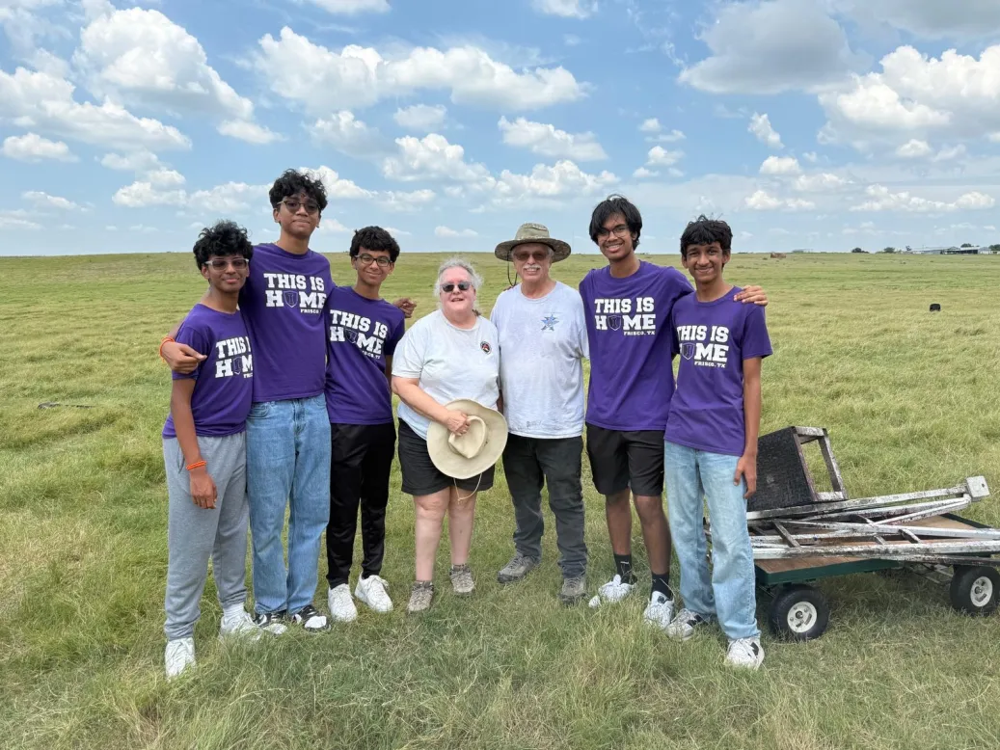
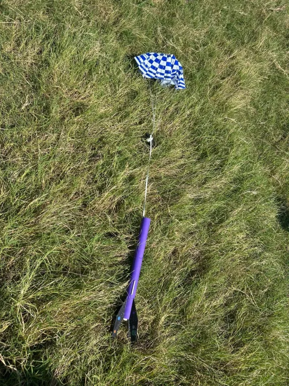

We are thrilled to report that today's maiden launch of our rocket, the Nebula One, was a complete success. We achieved three for three successful launches at the Dallas Area Rocketry Society (DARS) field in Gunter!
After a last-minute fix to the fins right before launch, the Nebula One performed flawlessly. Flying on C6-5 motors, it had three beautiful, stable flights, reaching an estimated altitude of around 450 feet each time. The recovery parachute deployed perfectly after every launch, which allowed us to recover the rocket in great condition.
Here is a video of one of the launches:
The experience at the DARS launch was incredible. We saw many high-powered rockets take to the skies, which was both humbling and incredibly motivating. Today was a huge success and a fantastic first step, and we know we have a long, exciting way to go.
 ← Back to all posts
← Back to all posts